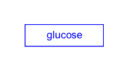

Background
A Metabolite data node in WikiPathways is used to depict a metabolite, small molecule or drug.
Your Mission
Draw the Metabolite depicted in this figure:
- Launch PathVisio and select File > New to start a new pathway. Close the Pathway attributes dialog.
- In the upper left of the canvas, the Pathway Information area will be displayed, and will say "Title: New Pathway". Select this by clicking on it, and in the Properties tab select "Homo sapiens" in the Species menu.
- Select Metabolite from the Data Node palette in the Objects tab.
- Click on the canvas to place the node.
- Double-click on the node to open its properties.
- Search for “glucose”; Choose any of the entries that just say “glucose” (in order of priority ChEBI, LIPIDMAPS, PubChem, CAS); Click OK to select the identifier, and then click OK again to close the node properties window.
- Done!
- Save your work as a GPML file under File > Save As.
- Drag-and-drop the GPML file below to submit.